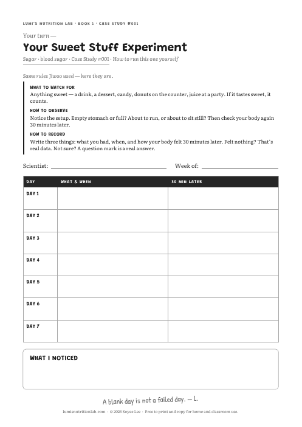
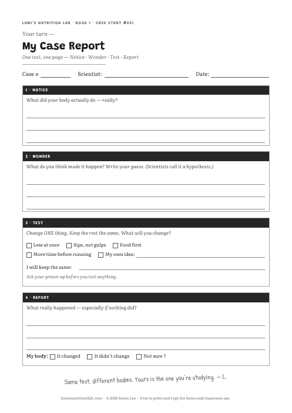
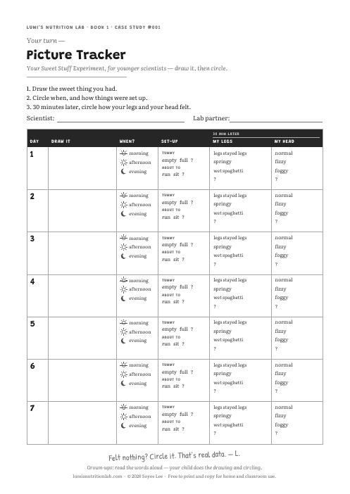

Lab Hub › Case #001 › Trackers
CASE STUDY #001 · BLANK TRACKER PAGES
Jiwoo’s week is filled in on page 61 of the book. The pages below are yours. Print as many as you need.

Ages 7–9 · one week
One week, the same three rules Jiwoo used. The same blank page as page 63 — with the rules printed right on it, so it works without the book.

Ages 7–9 · one day
One page for one test: Notice · Wonder · Test · Report. For the day you change ONE thing on purpose — like Lumi’s list on page 43.

Ages 6–7 · one week, with a grown-up
For younger scientists: draw what you had, then circle how your body felt. Almost no writing.
All three in one file:
Print at 100% (actual size). Free to print and copy for home and classroom use.
Page 60 of the book, word for word. They’re printed on your tracker page too.
A blank day is not a failed day. It’s a day with nothing sweet in it. Write that down too — by writing nothing. — L.
From For the Grown-Up Lab Partner, pages 64–66.
1 · Ask. Don’t check. The record belongs to your child. An inspected notebook stops being honest by about day three.
2 · Praise “I didn’t feel anything.” A child who reports no change has produced an honest result — harder and rarer than the expected one. Answer it with: “Good — you wrote down what actually happened. That’s the whole job.”
3 · Don’t say the finding first. Most children notice something unexpected. Name it first, and they confirm your answer instead of finding their own.
Know when to stop. One week, sweet things only. If it becomes a log of everything eaten, or your child asks if a number is too high, close it and come back in a year or two. Curiosity doesn’t need a streak.
This book is about ordinary, passing sensations. Call your pediatrician if shakiness, dizziness, sweating or headaches keep coming back; if thirst and trips to the bathroom rise sharply, alongside unusual tiredness or weight loss; or after any confusion or fainting. If your child already lives with a diagnosed condition, talk with their care team before running the tracker. Nothing here is medical advice.
This site collects nothing. The paper — and what’s written on it — stays at home. All three books’ grown-up notes →